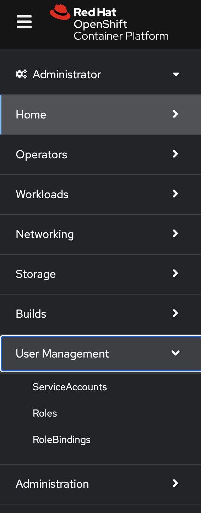
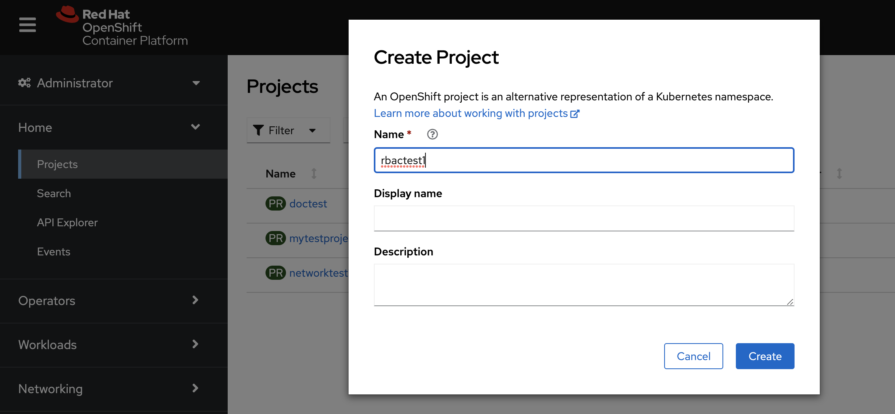
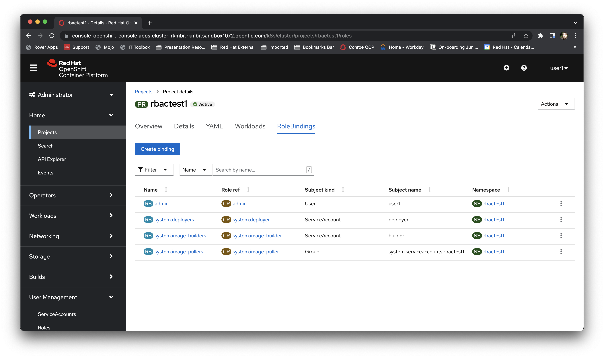
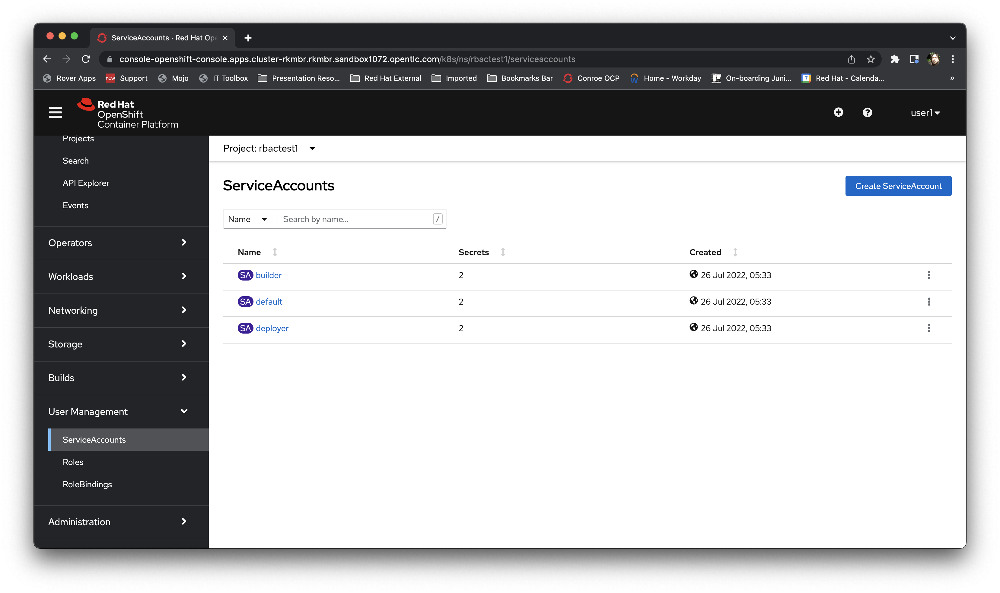
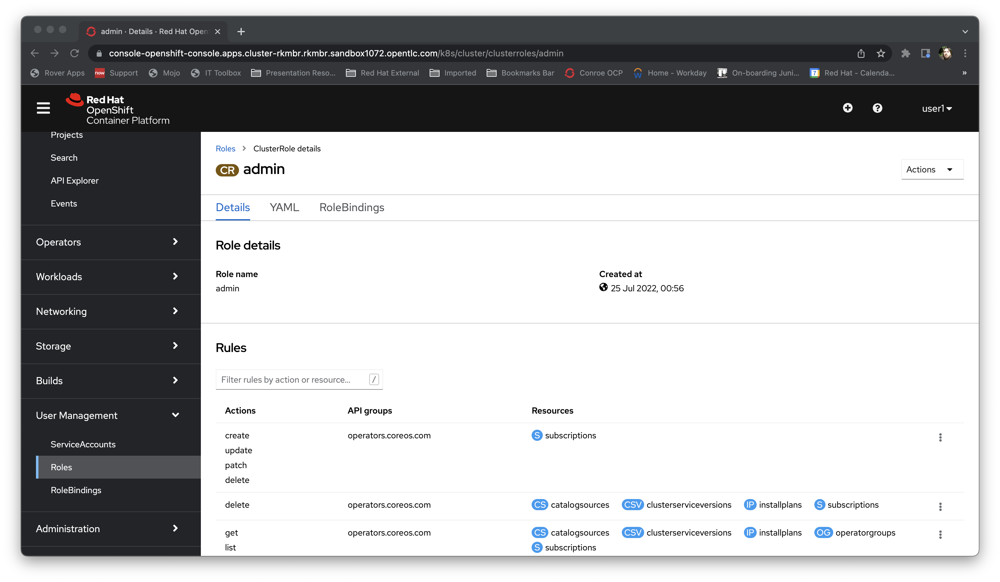

Student Bootcamp - OpenShift RBAC Exercises
Welcome to the Red Hat Student Bootcamp OpenShift RBAC exercises. This page will guide you through examining the objects within OpenShift that provide the RBAC functionality; this session should take about 30 minutes,
but the cluster will remain up and active for the rest of the day if you run out of time.
For this exercise please use the Cluster URL provided, along with the username (format userX where X is a number) and the password openshift
Logging on to the system
Go the URL provided for the Cluster.
Your username will be "userX" where X is a number. Your password is openshift.
Once you have logged in you may be presented with the developer's perspective; for this exercise we will be using the administrator's perspective. Switch to the administrator's perspective using the pulldown at the top left of the user interface.

Creating a Project/Namespace
In order to examine the Objects used to access OpenShift we will create a project from scratch.
Open the Project tab by going to Home/Projects.
Click on "Create Project".
Set the name of your project to "rbactestX", replacing X with your user number.

Hit "Create" to create the project.
Examining the default rolebindings for a project
When you have created the project you will be at the Overview tab for the newly created project. Click on "RoleBindings".

This page shows a summary of the RBAC Role Bindings currently active for this project. Note that the User who created the project, yourself, has the Cluster Role of admin bound to the namespace, giving you the ability to create and delete resources within the project.
Note also the system:image-pullers role binding applied to 'Group'. This means that any Service Account in the group system:serviceaccounts:rbactest1 can pull images from the integrated registry. This nomenclature of 'system.serviceaccounts.(x)', where x is a namespace, allows for wildcard application of rolebindings.
Examining the Service Accounts for a Project
Using the left-hand navigation bar, select User Management/ServiceAccounts.

Note the three ServiceAccounts created when the Project was created. The default ServiceAccount is the one that is used by default when no other ServiceAccount is defined as part of the specification for an Object. Both builder and deployer are special case ServiceAccounts that are used to build composite images (when you do a source-to-image build) and when you deploy images to worker nodes. Both of these actions need additional system privileges that should not be available to the default ServiceAccount, so these are provisioned to allow the User to create Images and deploy Pods.
Examining Roles
Roles are the lists of actions that can be applied to Objects. You can view these by going, on the left-hand navigation panel, to User Management/Roles.
Click on the 'Admin' role and have a look at the varied set of verbs, the objects they can be applied to (listed under 'Resources') and the API Groups that control them.
